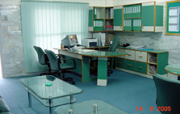

ADMISSIONS:
Coordination System:
Academic coordination is pivotal to our education system. The coordinators and facilitators ensure:
The coordinators play the role of a friend, partner, guide, mentor and a counselor. The coordinators cater to the professional development of the teachers as well. In the weekly meetings, they gradually develop the professional competence of the teachers.
To instill Islamic values in the children, co-curricular activities such as Morning Assemblies, Debates and Sports are regularly organized.
In the higher classes, Fehm-ul-Quran and Hadith are stressed upon. Islamic history and Fiqh are also introduced in the Islamiat syllabus. Topics are carefully selected to build a sound moral foundation and to contribute towards strong character building of the students.